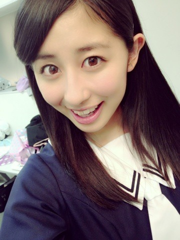

| 2013/05 10 Fri | 折り返し地点のよう だ。(´>∀<｀)ゝ |
ちはるーむへようこそ\( ˆoˆ )/

今日は一幕でみんなの
相手役やももたろうの仲間役や男役に
なぜかたくさん抜擢されて
実はすごく嬉しかったd=(^o^)=b！！！
そしてすごくすごく伸び伸び楽しくできたd=(^o^)=b！！！
まいまいまでもが終わったあとに
ちーちゃんの男役好きだから今度そーゆー時あったら呼ぶね♡
って可愛くゆってくれたヽ(•̀ω•́ )ゝ✧！
なんとっなんて聖母っ
まいみんとしては嬉しすぎた。//
でもほんとの自分の出番のときに
あれ、ちはる、まだやってなかっんだ。笑ヽ(・∀・)ノ
って思った方も多いはずヽ(・∀・)ノ笑
なんか申し訳ないヽ(・∀・)ノ笑
今回は明田川役に立候補したんですが、
残念ながら...
ななみん、ななせまる、みさみさと
もう人気も実力も備えた強者が揃ってしまって！！
悔しかったけど、
そりゃーイケメンななみだもん。
惚れたよ。脱帽。
でも、明田川役は
絶対に、二幕で演じたい役です。
どうしても一回演じてみたい！！！
今までみんながやった明田川を見せたいと思っているので
選ばれたら全力で大声で頑張ります！！
はい！
(バレー部の返事風)
なんだかもう半分が過ぎて大阪もいれた全公演の折り返し地点にきてるみたい。
残り半分。
欲を言うと、もっと二幕で演じたい。
もっと舞台に立っていたい。
もっと女優としていたい。
だから、そのためにあたしは明日からも頑張る。
うしっっっ
本気だぞっ頑張るぞっっ

すかにゃん。ファイティングウーマン。
ばいるんっ
るんるんっ
ちはるんっ
(´>∀<｀)ゝ
コメント(132)
2013/05/10 00:00